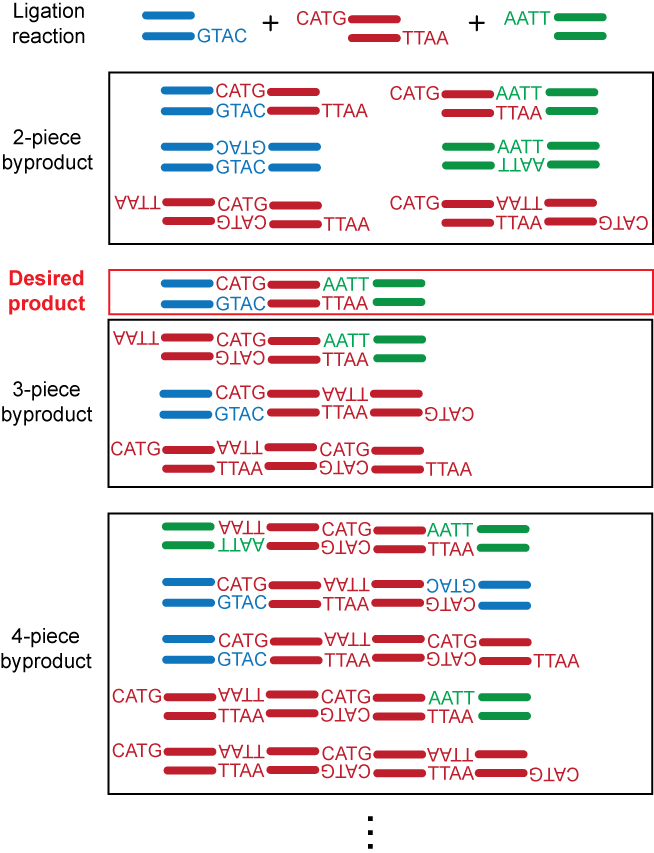
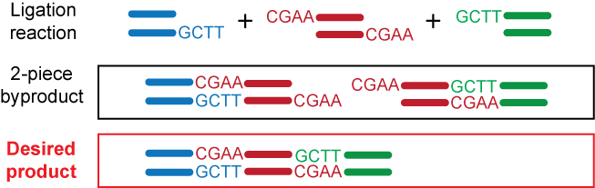

NP-Sticky: Model-Guided Ligation Calculator
Type IIP vs. Type IIS Restriction Enzymes
Type IIP Restriction Enzymes
Most commercially available enzymes for restriction digests belong to the Type IIP (palindromic) family, which recognize, and cleave within, symmetric DNA sequences. The use of palindromic ends generated by these enzymes complicates downstream intermolecular ligations because palindromic ends from two identical molecules can anneal, thus competing with intermolecular ligations that form the product of interest. The example below shows a 3-piece linear ligation reaction with sticky ends generated by two Type IIP restriction enzymes NcoI and EcoRI.

Type IIS Restriction Enzymes
Type IIS enzymes cleave at asymmetric target sites, some away from their recognition sites, allowing custom design of sticky ends. The advantages of rationally designing the sequences of the sticky ends include: (1) eliminating undesired intramolecular or intermolecular ligations that lead to unwanted species, (2) increasing ligation fidelity by forcing directional cloning, and (3) optimizing ligation efficiency by matching the free energy of annealing at sticky ends. The example below shows a 3-piece linear ligation reaction with two custom design sticky ends generated by a Type IIS restriction enzyme.

Several Type IIS enzymes (e.g., BbsI, BsaI, BsmBI, and SapI) are suitable candidates for routine cloning in replacement of Type IIP enzymes because: (1) they do not require two copies of their target sequences for cleavage, (2) they have high fidelity in the number of bases between recognition and cutting sites, and (3) they cleave relatively close to their recognition sites.
Experimental Validation
In our studies, we demonstrated that ligation yield is significantly improved by utilizing input DNA that was digested by Type IIS restriction endonucleases instead of by analogous Type IIP enzymes. We observed up to 2.6- and 15-fold increases in desired products for linear and circular ligation reactions, respectively. For more information, please refer to Ng DTW and Sarkar CA. Protein Eng. Des. Sel. 25, 669-678 (2012).
Last modified by Daphne Ng on Jan 4th, 2014